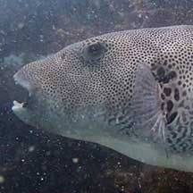
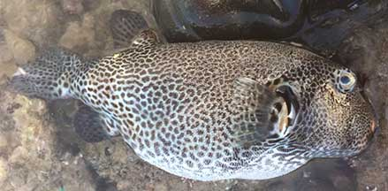
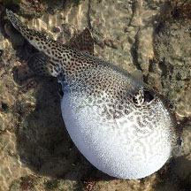

|
|
| fishes text index | photo index |
| Phylum Chordata > Subphylum Vertebrata > fishes > Family Tetraodontidae |
| Starry pufferfish Arothon stellatus Family Tetraodontidae updated Nov 2020 Where seen? Sometimes seen by divers. On the intertidal, a dead and dying one was seen at St John's Island. Elsewhere, juveniles usually seen on muddy and estuarine shores. Adults in deeper water near coral reefs. Features: Those seen about 30cm, may grow to about 50cm to 1.2m! It is indeed considered the giant among puffers. Body covered with fine prickles. Pale grey with dense black spots on its head and around the eyes, also on the fins. Juveniles with dark stripes on belly, becoming spots with growth; adults with or without spots on fins. |
 Live one, seen diving. Photo by Toh Chay Hoon from Singapore Biodiversity Records 2019:54-55 |
 Dead one that washed ashore.St. John's Island, Dec 16 Photo shared by Rene Ong on facebook. |
| Starry pufferfishes in Singapore |
On wildsingapore
flickr
|
| Other sightings on Singapore shores |
 Dead/dying washed ashore. St. John's Island, Dec 16 Photo shared by Rene Ong on facebook. |
Links
References
|